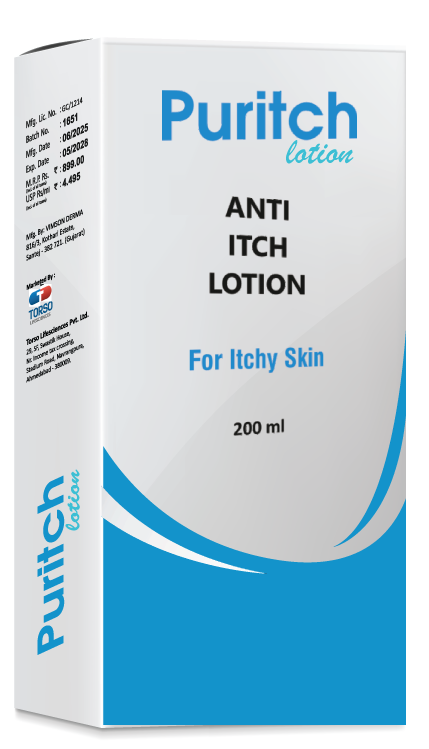

Puritch Lotion
Indication & Usage
Puritch Lotion is an anti-itch lotion specifically formulated for itchy skin and Uremic Pruritus (chronic kidney disease-associated pruritus). In chronic kidney disease, the kidneys cannot properly clear waste products like urea, creatinine, and other metabolic toxins. This leads to uremic pruritus — a persistent, distressing itch without an obvious rash. Electrolyte imbalances, dry scaly skin, systemic inflammation, and secondary hyperparathyroidism also contribute to severe itching. Puritch provides fast, soothing relief, restores the damaged skin barrier, and breaks the itch-scratch cycle.
Composition & Pack
Anti Itch Lotion For Itchy Skin · 200 ml
How Puritch Lotion Helps
Puritch anti-itch lotion provides targeted therapeutic action for CKD and dialysis patients through four essential mechanisms:
- Hydrating the skin: CKD frequently causes xerosis (dry, scaly skin) which triggers and exacerbates pruritus. Puritch deeply hydrates cutaneous layers.
- Soothing irritation: Offers immediate cooling and soothing relief to calm hypersensitive peripheral nerve endings in the dermis.
- Restoring the skin barrier: Strengthens the lipid barrier to prevent transepidermal moisture loss and painful cracking.
- Reducing the need for scratching: Breaks the itch-scratch cycle, effectively protecting the skin from secondary abrasions and bacterial infections.
Key Benefits
- Fast Acting: Rapid onset of soothing relief upon application
- Instant relief from itching: Quickly calms burning, stinging, and persistent itch
- Neutral pH: Gentle on vulnerable, compromised renal patient skin
- Retains skin moisture & integrity: Locks in essential hydration for prolonged comfort
- Safe, steroid-free formulation: Suitable for regular, prolonged use without steroid side effects
Indications & Uremic Pruritus Background
Uremic pruritus (also known as CKD-associated pruritus or renal itch) is a common, distressing condition affecting up to one-third of dialysis patients (especially common in hemodialysis). Contributing factors include abnormal calcium and phosphorus metabolism, elevated parathyroid hormone (PTH), toxin accumulation, peripheral neuropathy, and systemic inflammation.
Puritch is indicated for all forms of uremic pruritus, renal itch, chronic dry skin, and generalized itchy skin conditions in CKD and dialysis patients.
Dosage & Administration
Adults and children 2 years of age and older: Apply generously to affected area not more than 3 to 4 times daily.
Children under 2 years of age: Consult a doctor before use.
This information is for registered medical practitioners only. Consult your medical practitioner before consuming or applying the products.
Disclaimer : This information is for the registered medical practitioners only. Consult your medical practitioner before consuming the products.